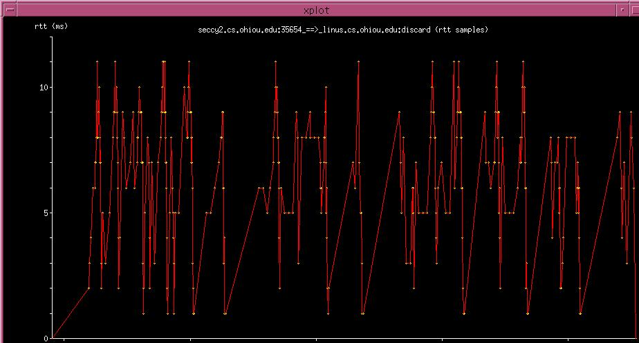

RTT (Round Trip Time) graphs (named X2Y_rtt.xpl) are generated with the
-R option. A sample RTT graph is shown in Figure 5.10.
Figure 5.10:
RTT Graph

The Y-axis represents RTT in milli-seconds and the X-axis represents time.
The yellow dots represent RTT samples calculated from non-retransmitted
segments, and the red line just connects the dots.